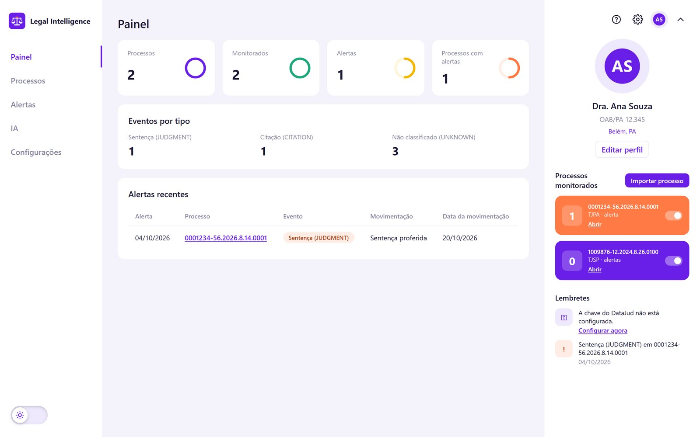
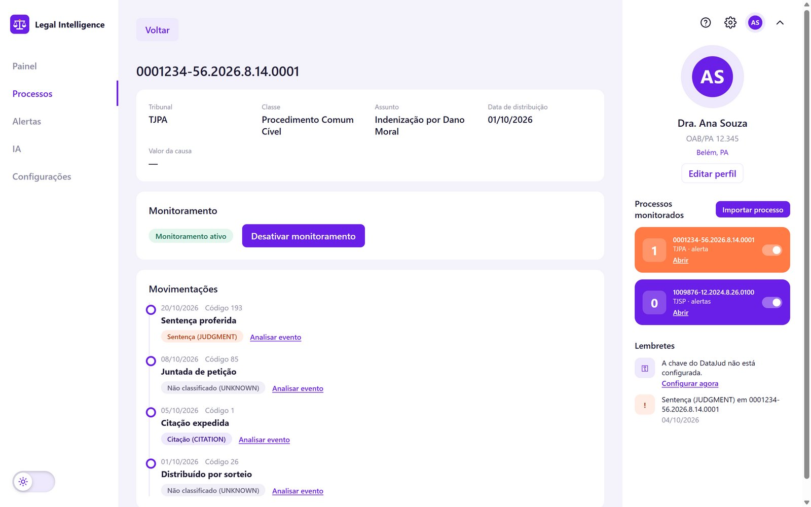
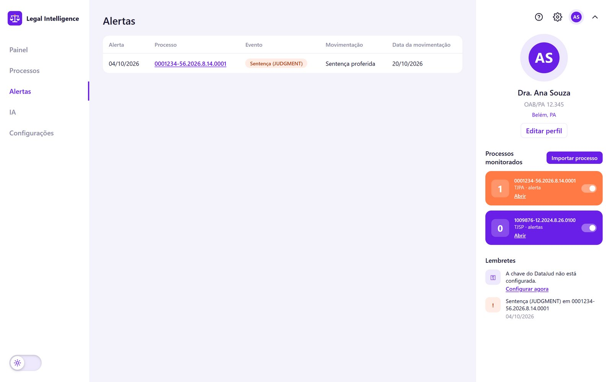
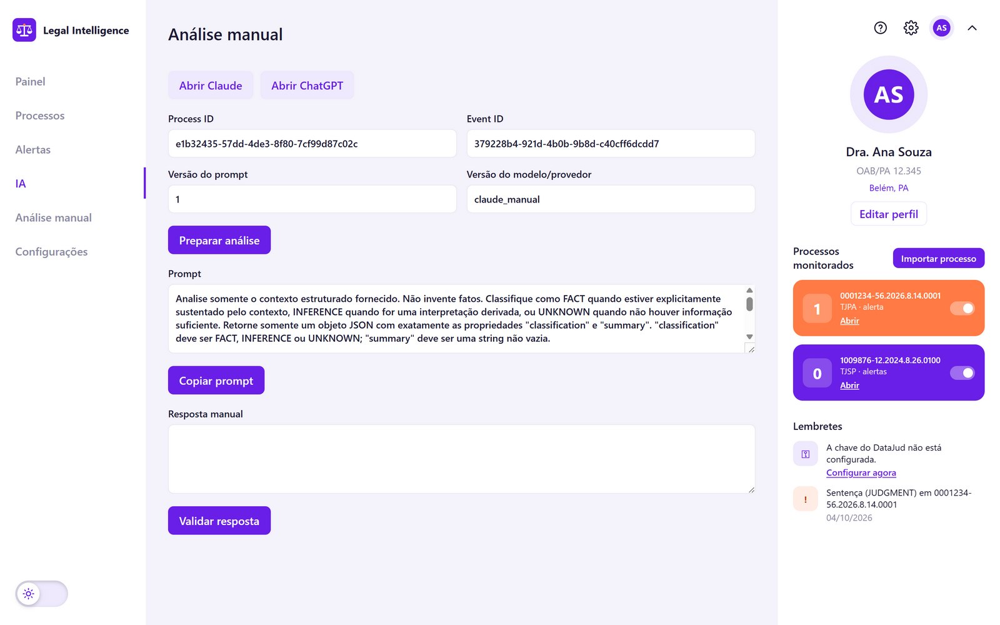
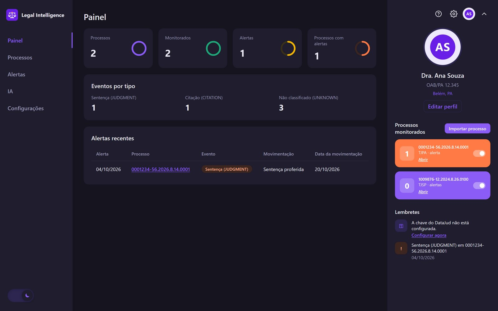

Para advogados e escritórios
Seus processos judiciais acompanhados de perto, sem esforço manual.
Um aplicativo para Windows que importa processos direto da base oficial do CNJ, avisa quando algo importante acontece e ajuda a entender cada movimentação com apoio de inteligência artificial.
- Windows 10 e 11
- Dados oficiais do DataJud (CNJ)
- IA como apoio, não como palavra final

Por que usar
Do acompanhamento manual ao aviso automático
Sem o Legal Intelligence
- Consultar processo por processo nos sites dos tribunais.
- Anotar à mão o que mudou desde a última consulta.
- Correr o risco de perder uma sentença ou citação no meio de andamentos rotineiros.
- Ler cada andamento técnico para entender o que ele significa.
Com o Legal Intelligence
- Importação pelo número CNJ, direto da base oficial.
- Linha do tempo organizada, com sentenças e citações destacadas.
- Monitoramento: só o que é novo vira alerta.
- Resumo da movimentação com IA, marcado como fato, inferência ou desconhecido.
Como funciona
Quatro passos, do número do processo ao alerta
-
Importar
Informe o número CNJ e o tribunal (TJPA, TJSP ou TRF1). O aplicativo busca os dados oficiais no DataJud.
-
Organizar
As movimentações viram uma linha do tempo. Sentenças e citações são identificadas e destacadas automaticamente.
-
Monitorar
Ative o monitoramento. Os acontecimentos relevantes de cada atualização aparecem como alertas.
-
Entender
Peça uma análise da movimentação à IA: OpenAI de forma automática, ou Claude e ChatGPT de forma manual.
Telas
Tudo o que importa, em poucos cliques
Linha do tempo clara
Todas as movimentações em ordem, da mais recente para a mais antiga, com os dados principais do processo: tribunal, classe, assunto e distribuição.
- Sentenças e citações com etiquetas coloridas.
- Monitoramento ligado ou desligado com um clique.
- “Analisar evento” em cada movimentação.

Alertas só do que é novo
Somente os processos monitorados geram alertas, e uma movimentação já conhecida não gera aviso repetido.
- Tipo do evento, movimentação e data em cada alerta.
- Atalho direto para o processo.
- Alertas também no Painel e nos lembretes.

A IA explica, o advogado decide
Duas formas de usar, à escolha do escritório:
- OpenAI (automática): com a chave do escritório, a análise é feita dentro do aplicativo.
- Claude ou ChatGPT (manual): o aplicativo prepara o texto, você cola na sua conta e traz a resposta de volta.
- Cada resposta é validada e classificada como fato, inferência ou desconhecido.

Aparência
Modo claro e modo escuro
Um interruptor troca a aparência com um clique, e o aplicativo lembra a escolha.

Segurança e privacidade
Os dados do escritório ficam com o escritório
Armazenamento local
Processos, alertas e análises ficam num banco de dados no próprio computador. Nada é enviado para servidores do aplicativo.
Chaves criptografadas
As chaves de acesso (DataJud e OpenAI) são protegidas pela criptografia do Windows e vinculadas ao usuário do computador.
Conexões só com o necessário
O aplicativo se comunica apenas com o DataJud e, se escolhido, com a OpenAI. No modo manual, o advogado usa a própria conta do Claude ou do ChatGPT.
Backup e atualizações seguras
O banco pode ser exportado e importado em outro computador, e o aplicativo faz uma cópia de segurança antes de cada atualização que altere os dados.